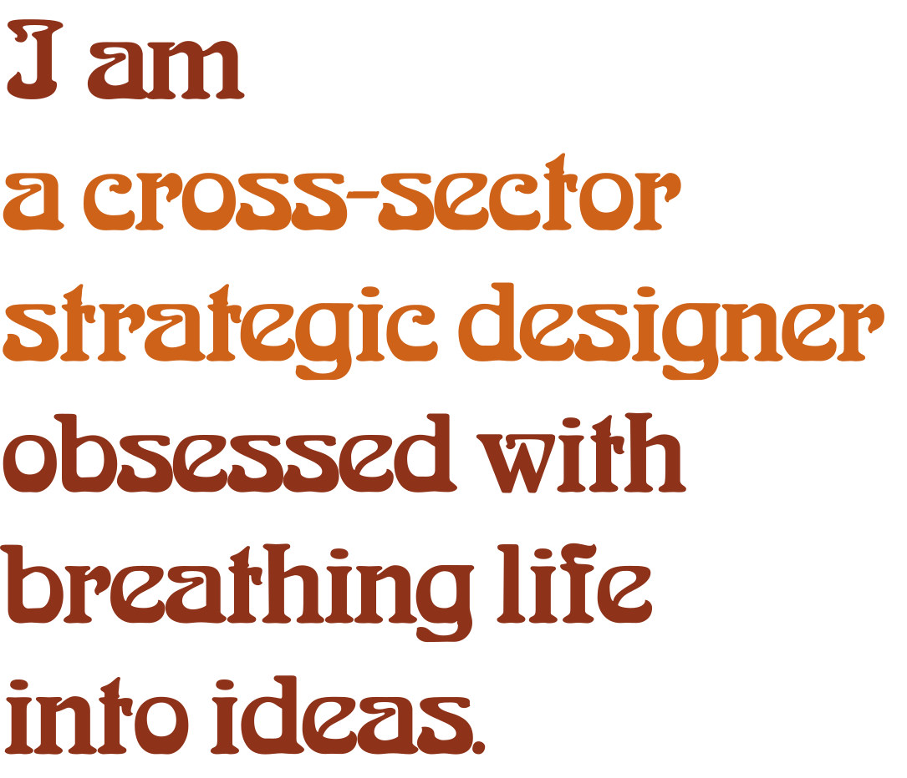
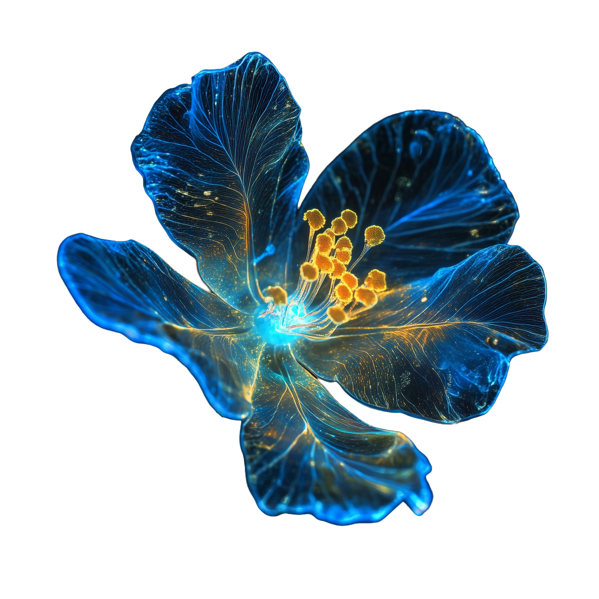
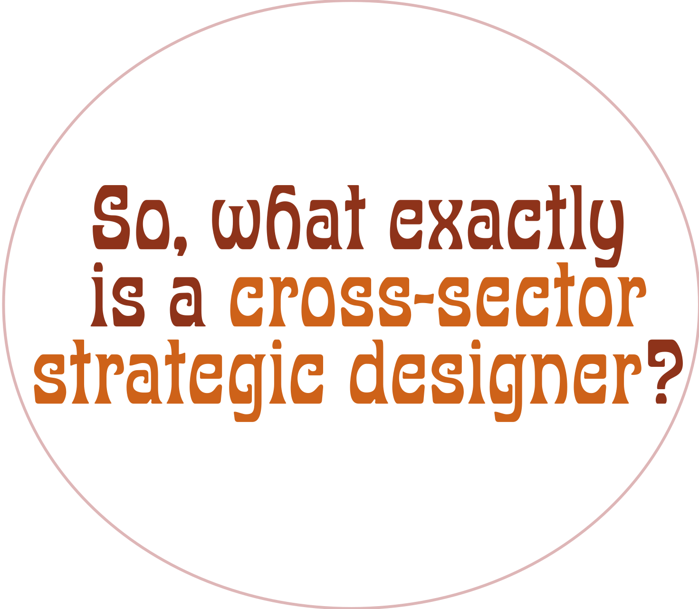
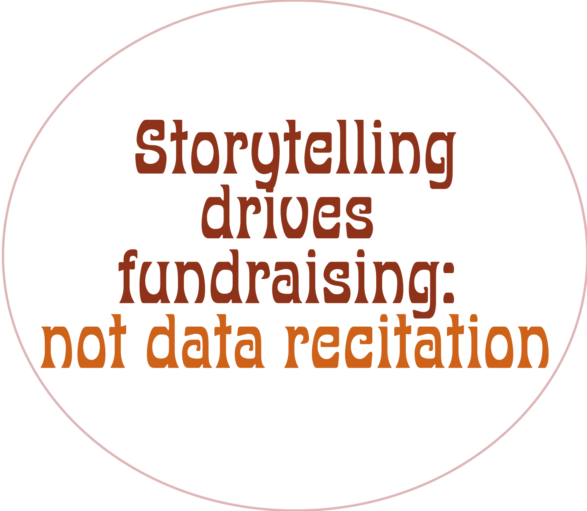
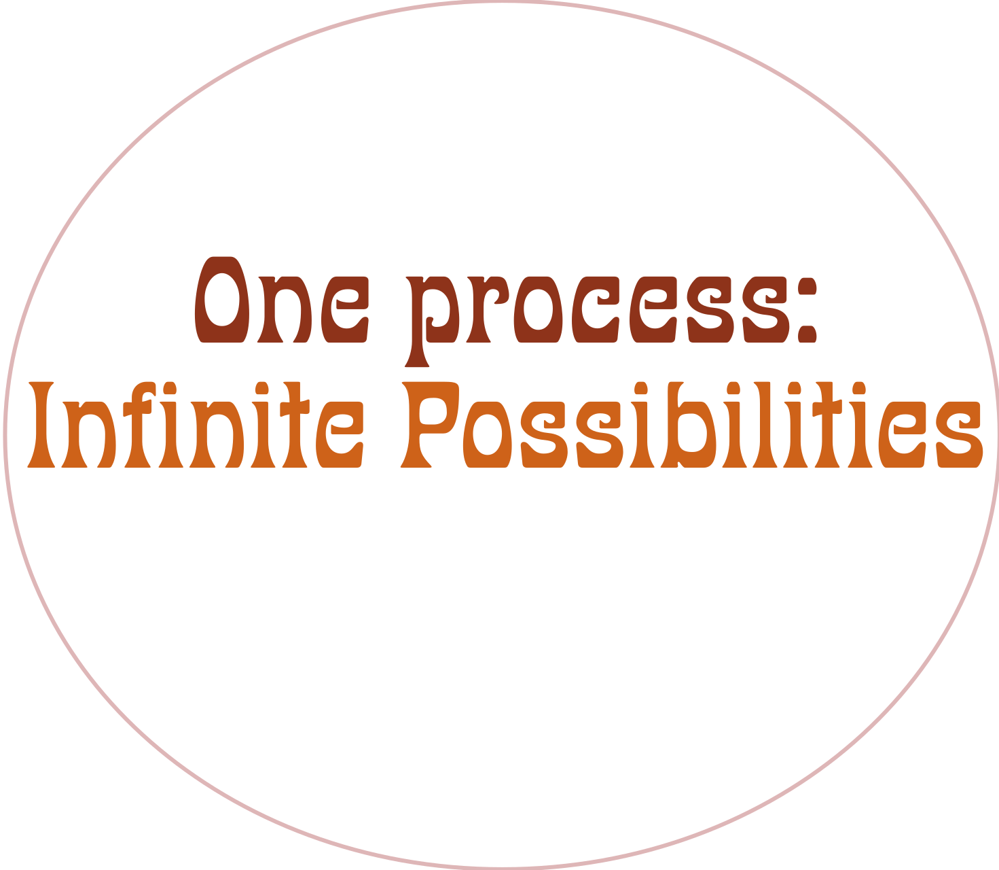
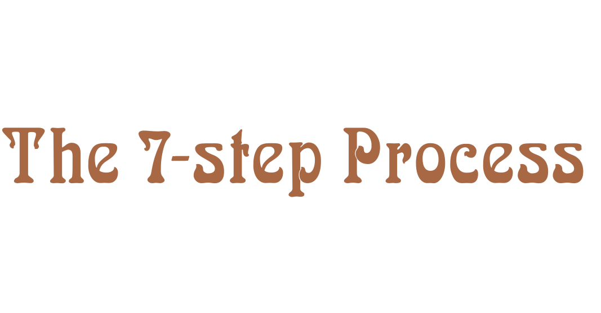
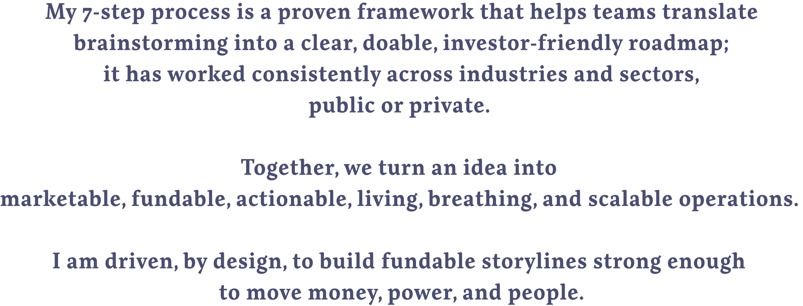
To expose the throughline of my career, I outlined a 7-step process; it allows me to illustrate to you, through the 7 case studies below, how I made my life's work by fusing the lifeforce of your idea to the narrative spine of your team's existing infrastructure to build fundable throughlines strong enough to move money, power, and people.
My 7-step process is a proven framework that helps teams turn messy, emerging needs into a clear, doable, investor-friendly roadmap — across any industry, public or private. My process translates your team's idea into a marketable, fundable, and actionable living, breathing, scalable operations.
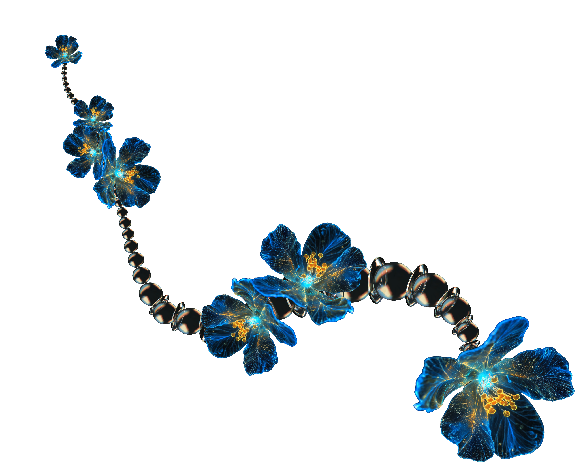


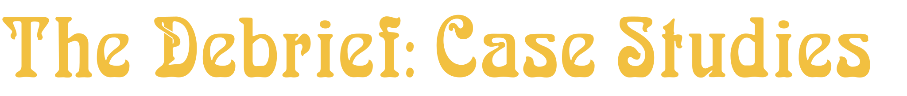
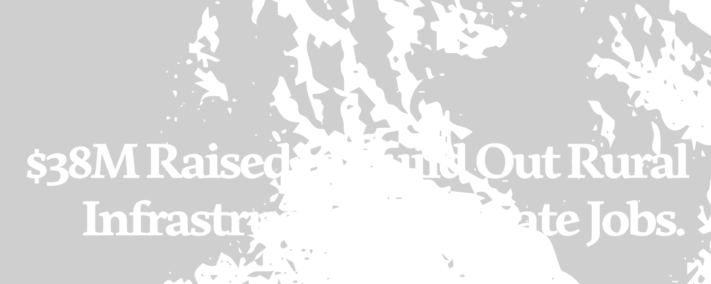
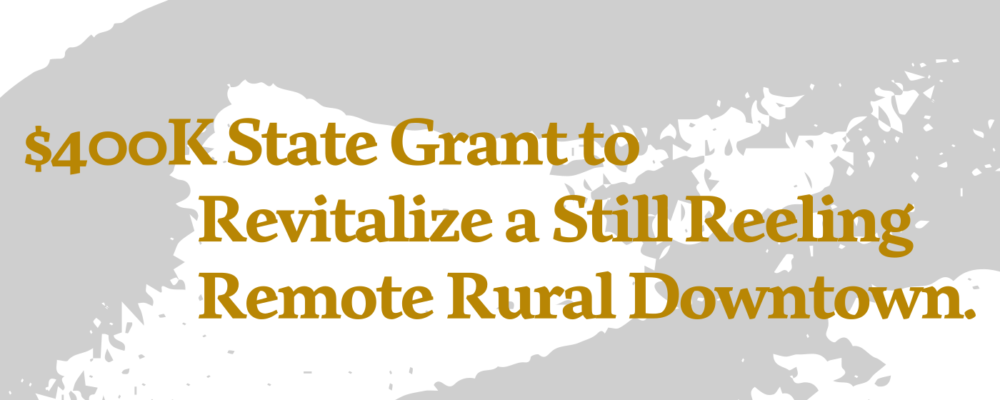
